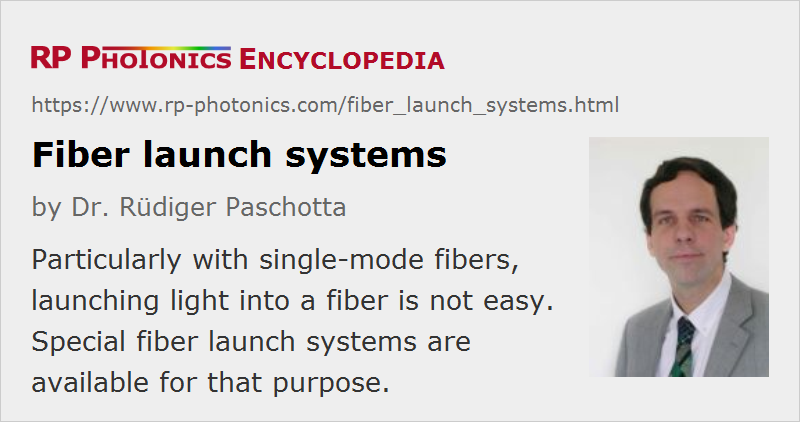

Fiber Launch Systems
Definition: optical systems for launching light into optical fibers
German: Systeme für die Fasereinkopplung
Category: fiber optics and waveguides
How to cite the article; suggest additional literature
Author: Dr. Rüdiger Paschotta
A common and important task in fiber optics is to launch light into optical fibers, i.e., to inject light into the fiber core such that most of it is guided along the fiber.
Conditions for Efficient Launching
For efficient launching, the light impinging on the fiber should mostly be a superposition of guided modes of the fiber. Launching is most difficult in case of single-mode fibers, exhibiting only a single spatial mode per propagation direction for a given wavelength. In that case, one must produce a focus at the fiber end with a transverse intensity profile similar to that of the fiber mode and with flat wavefronts. Multimode fibers make launching substantially easier, particularly if they have a large number of modes. It may not be strictly necessary then to have a beam focus exactly at the fiber end.
Particularly single-mode fibers typically have a rather small fiber core, which obviously needs to be hit for launching light. Typical core diameters are only a couple of microns, There are also large mode area fibers with single-mode propagation, where the transverse alignment requirements are less strict, while the angular tolerances are correspondingly tighter. Overall, it is then not necessarily easier to launch light than for small-core single-mode fibers – particularly with opto-mechanics designed for small-core fibers, possibly not offering sufficiently precise angular alignment.
Elements of Fiber Launch Systems
Essentially, a fiber launch system (also called fiber coupling stage) consists of a focusing lens in conjunction with optical-mechanical elements for fixing either a bare fiber end or a fiber connector containing the fiber (e.g. a FC/PC connector). In addition, it has controls for fine adjustment of the input beam and/or the focusing lens.
If a bare fiber is inserted, it is usually fixed in a V groove with some clamp. Before inserting a fiber, it is usually required to strip the coating from its end of some length, e.g. the length of the mentioned V groove. In case of a connectorized fiber, one should of course take care that the fiber is properly mounted in the connector.
Some fiber launch systems are equipped with a fixed focusing lens, while others can accommodate different lenses (e.g. GRIN lenses or microscope objectives) for higher flexibility, for example in order to work with fibers having substantially different mode field diameters and/or with input beams of different beam radius, or to work in different wavelength regions.
For optimum launch efficiency, excessive optical aberrations from the lens should be avoided. For example, for broadband light one may use an achromatic lens (see Figure 1). The correction of spherical aberrations is relevant for single-mode fibers, particularly those with a small mode field diameters. One sometimes uses microscope objectives in order to have such correction, although these are not really optimized for that application.
As explained above, a high precision of the optical-mechanics (preferably with sub-micron accuracy) is particularly important when working with single-mode fibers. Translation stages should exhibit smooth continuous movement with low creep over a few millimeters. They ideally work without lubricants for long-term reliability. Besides the precision, long-term stability can also be important; this depends not only on the quality of the used opto-mechanical components, but also on the mechanical design.
The used optics are essentially the same as for a fiber collimator, but the alignment features must be more refined for fiber launching. Typically, one will have two perpendicular linear translation stages with micrometers screws for the transverse position of the fiber end and one or two additional controls for the angular adjustment. One rotational degree of freedom (rotations around a vertical axis) may be covered by alignment of the input beam only.
Some fiber launch systems are available with motorized mechanical drives. This can be convenient, for example if the launch setup is not well accessible. Also, it can be the basis for automatic alignment (see below).
Launching into Polarization-maintaining Fibers
Launching light into polarization-maintaining fibers is not essentially different, but usually one wants to launch linearly polarized light with the polarization axis aligned to one of the birefringence axes of the fiber. In some cases, it is desirable to rotate the fiber around its axis to meet that condition. Therefore, there are fiber launch systems with the ability to rotate the fiber end or the fiber connector.
The Launching Procedure
Fixing the Fiber End
Fiber launching begins with carefully fixing the fiber end in the launch system or attaching the fiber connector. Ideally, one should check with a fiber microscope whether the cleaved fiber end is intact and clean.
Working with angle-cleaved fibers is more difficult. One should be aware that optimal launching then requires an input beam direction which deviates from the fiber axis, and any rotation around the fiber axis will of course change the required input beam direction. In difficult cases, it may be helpful first to launch some visible light from the other end in order to align the angled end such that the mentioned visible light overlaps well with the input beam.
Preparing the Input Beam
Next, the collimated input beam should be prepared with an appropriate beam radius and roughly aligned, possibly using auxiliary parts such as beam apertures. Preparing a beam with appropriate beam radius is particularly important for single-mode fibers. If a high launch efficiency is required, one should calculate that beam radius from the fiber mode radius and the focal length of the used lens. Alternatively, one may measure the radius of a collimated beam as obtained when sending light through the fiber and the used lens, this time used as collimation lens.
During the alignment operation, one should avoid excessive optical input powers because those could lead to damage e.g. of a fiber coating.
Monitoring the Launch Efficiency
Further, a suitable photodetector should be attached to the fiber end so that one can monitor the injected optical power. If the fiber is long enough, one should normally have only properly launched light getting to the detector rather than e.g. the fiber cladding; usually, cladding modes have substantial propagation losses. For the initial alignment phase, it can be helpful to have a detector with high sensitivity, possibly using a much higher signal amplification than in the final phase. Obviously, one should take care that no stray light can get to the detector, simulating transmission through the fiber.
In case of an active fiber (rare-earth doped fiber), one may alternatively monitor fluorescence light at the side when launching pump light. The latter technique also helps to ensure that light is injected into the doped core rather than into the fiber cladding – particularly in case of double-clad fibers.
It is helpful if the detector reacts relatively quickly – faster than for example a thermal power meter. A convenient solution can be to use a photodiode in conjunction with an oscilloscope.
It may be necessary to measure the absolute launch efficiency in order to judge whether the launch was fully successful.
The Alignment Procedure
One can then play with the alignment controls until some launched light can be detected, and then systematically optimize the transmission by fine adjustment of the controls. Instead of optimizing one control after the other, one often uses a pair of control screws – for example, those for the transverse position and the beam angle in a horizontal plane. Here, one subsequently sets different positions of one screw and checks how much transmission is achieved by optimizing the other one.
Trouble Shooting
If no satisfactory launch efficiency can be achieved, one should check various details, for example whether the beam quality has been deteriorated e.g. due to dirty optics and whether the fiber end is of high quality and clean.
When repeatedly using such a set up for launching, it is of course advisable to keep records on the achievable detector signal for a certain incident optical power. Also, I can be helpful to mount beam apertures at appropriate locations in order to more easily find the right input beam direction.
Systems for Automatic Optimization and Stabilization
There are fiber launch solutions which can automatically optimize the alignment for efficient launching with at least two degrees of freedom, and also provide long-term stability of the launch efficiency.
For example, such a system may have an electromechanical system for rapidly rotating the position of the focusing lens around its nominal position. At the same time, the light throughput is monitored with a detector. From the observed installation of the detector signal and its phase relative to the drive signal for the lens mount, the electronics can evaluate any positioning errors and subsequently correct them.
Automatic launch systems can be fairly helpful, although they of course increase the cost and require additional preparations such as connecting a suitable detector. Also, of course they work only as long as continuous input light is available.
Suppliers
The RP Photonics Buyer's Guide contains 5 suppliers for fiber launch systems. Among them:
Questions and Comments from Users
Here you can submit questions and comments. As far as they get accepted by the author, they will appear above this paragraph together with the author’s answer. The author will decide on acceptance based on certain criteria. Essentially, the issue must be of sufficiently broad interest.
Please do not enter personal data here; we would otherwise delete it soon. (See also our privacy declaration.) If you wish to receive personal feedback or consultancy from the author, please contact him e.g. via e-mail.
By submitting the information, you give your consent to the potential publication of your inputs on our website according to our rules. (If you later retract your consent, we will delete those inputs.) As your inputs are first reviewed by the author, they may be published with some delay.
See also: fibers, fiber collimators, fiber optics
and other articles in the category fiber optics and waveguides
|  |
If you like this page, please share the link with your friends and colleagues, e.g. via social media:
These sharing buttons are implemented in a privacy-friendly way!